5…14 °C
☔ 0% · 0.0 мм · 💨 до 3 м/с · 🌅 07:07 · 🌇 17:02
👕 Лёгкая куртка или свитер
Прогноз, может измениться. Обновлено: 30.10.2026 06:03 МСК · Open-Meteo
24.10, суббота. Приехали в Рязань, а погода нас встретила просто отличная. Заселились в «ПИК» и пошли в кремль.
Были на экскурсии по Рязанскому кремлю и заглянули в Архангельский собор. Красиво, спокойно, кремль на холме.
Потом засели в кафе-баре «Собака Павлова» рядом с кремлём (Соборная пл., 21). Взяли грибной суп и пасту с куриной печенью и лисичками, а к ним по одной настойке. Тепло, сытно и очень по-нашему.
После обеда доехали до рязанской ВДНХ — Торгового городка — и зашли в павильон №23. Оказалось, там «Резиденция традиций»: немного музей, немного магазин рязанских промыслов. Михайловское кружево, скопинская керамика с зелёной глазурью, а под потолком висят лоскутные панно — очень красиво.
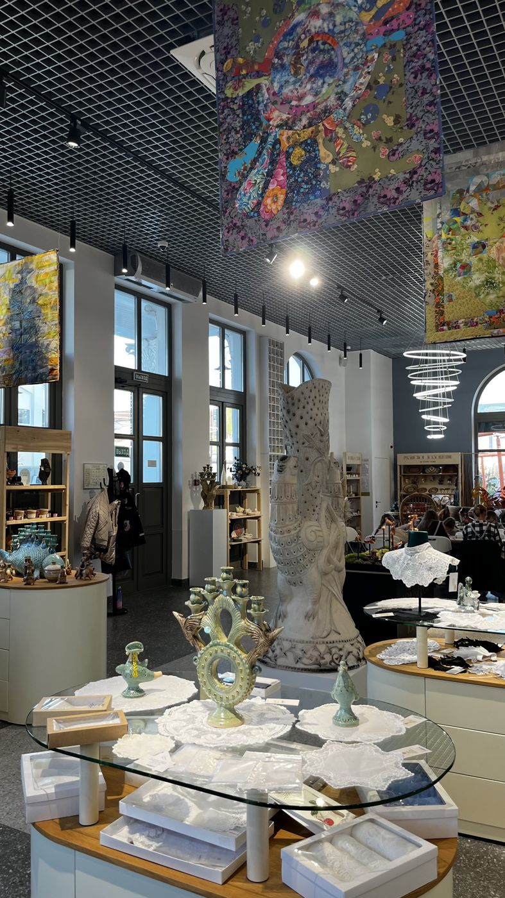
Напоследок немного погуляли по лесопарку рядом — и на этом всё. Хороший первый день!
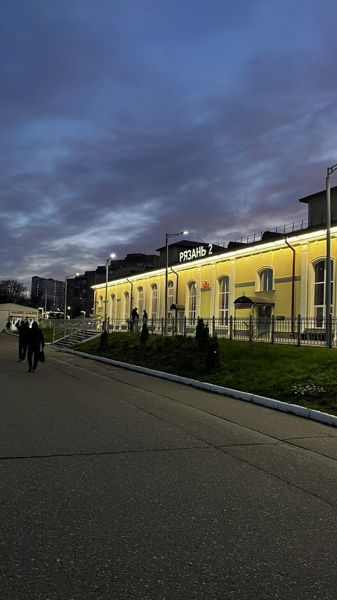
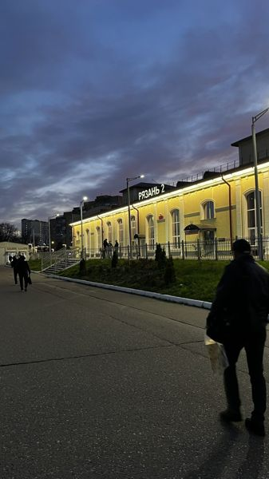
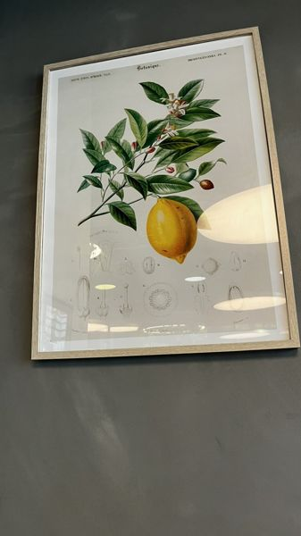
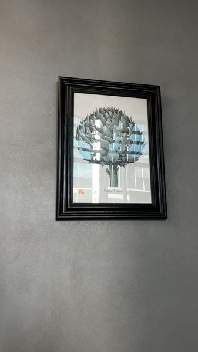
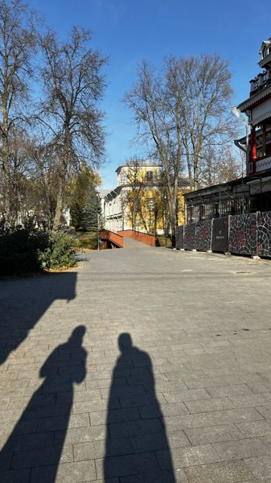
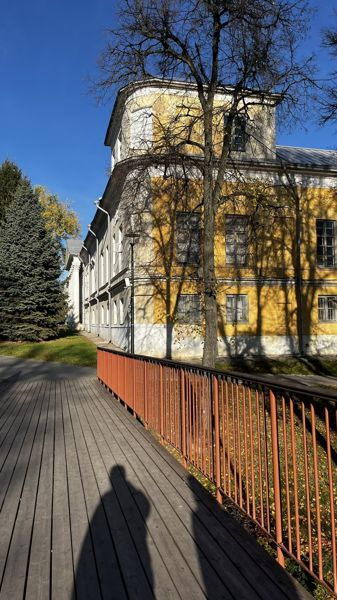
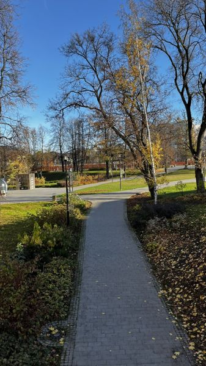
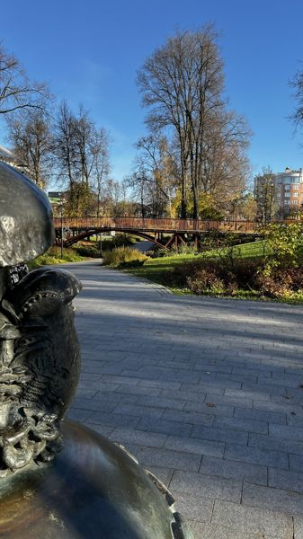
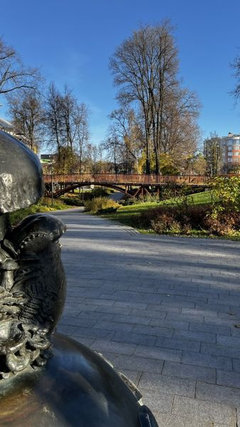
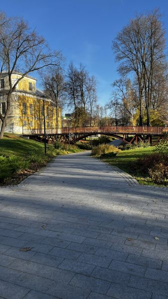
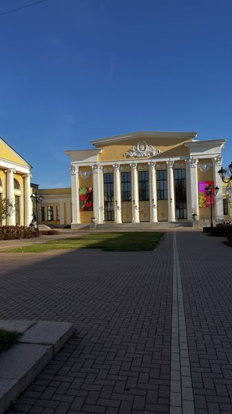
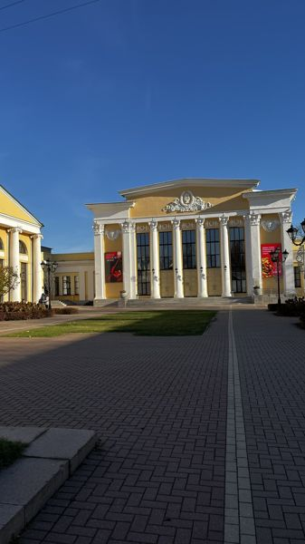
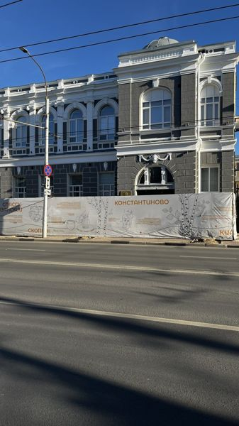
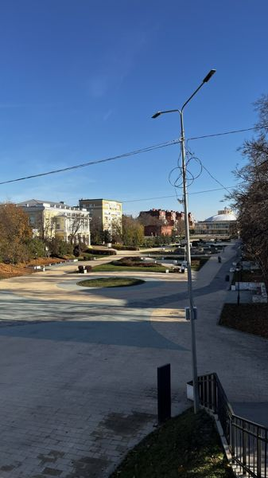
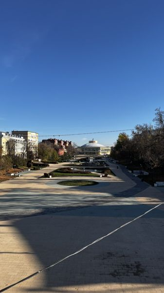
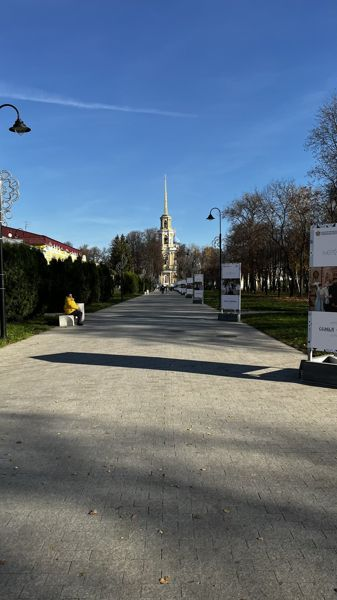
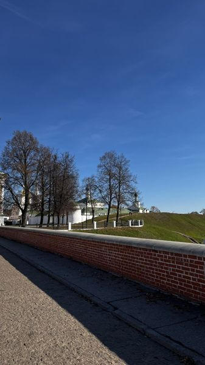
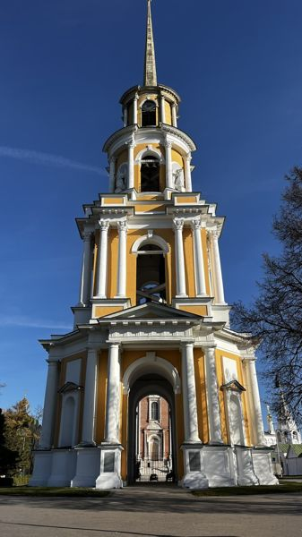
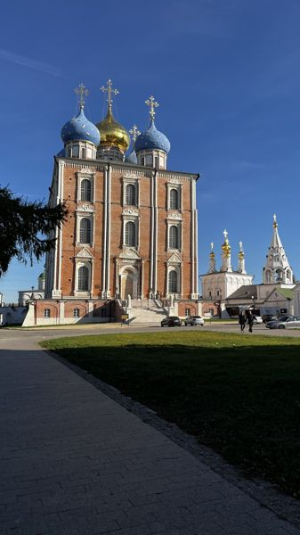
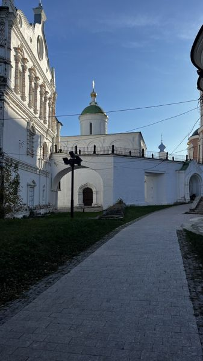
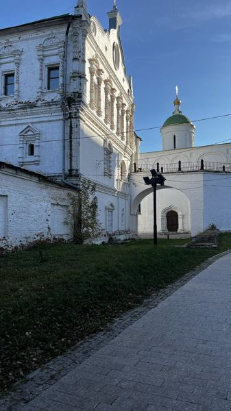
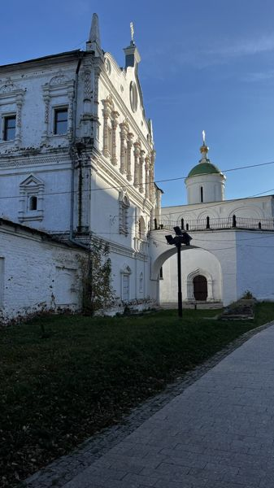
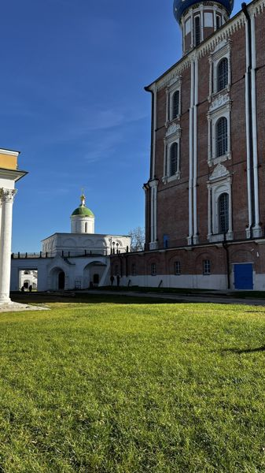
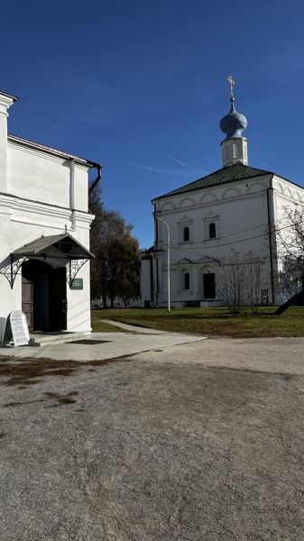
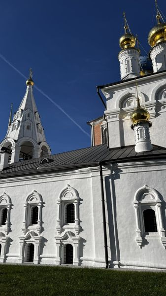